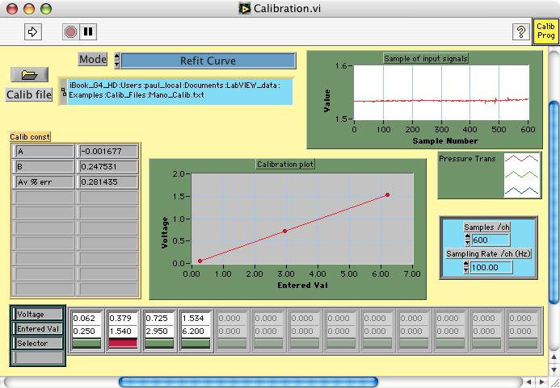

Click on the Calibration.vi to make it the active window or select it from the LabVIEW Window menu bar

Click on the Run arrow to Refit the calibration omitting the points that have been marked red
The Calibration.vi should now show only three calibration point
The omitted calibration points can be reinstated by just clicking on the button to turn it green then rerunning the Calibration.vi again in the Refit Curve mode